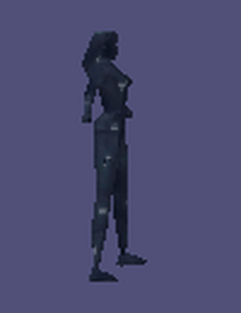
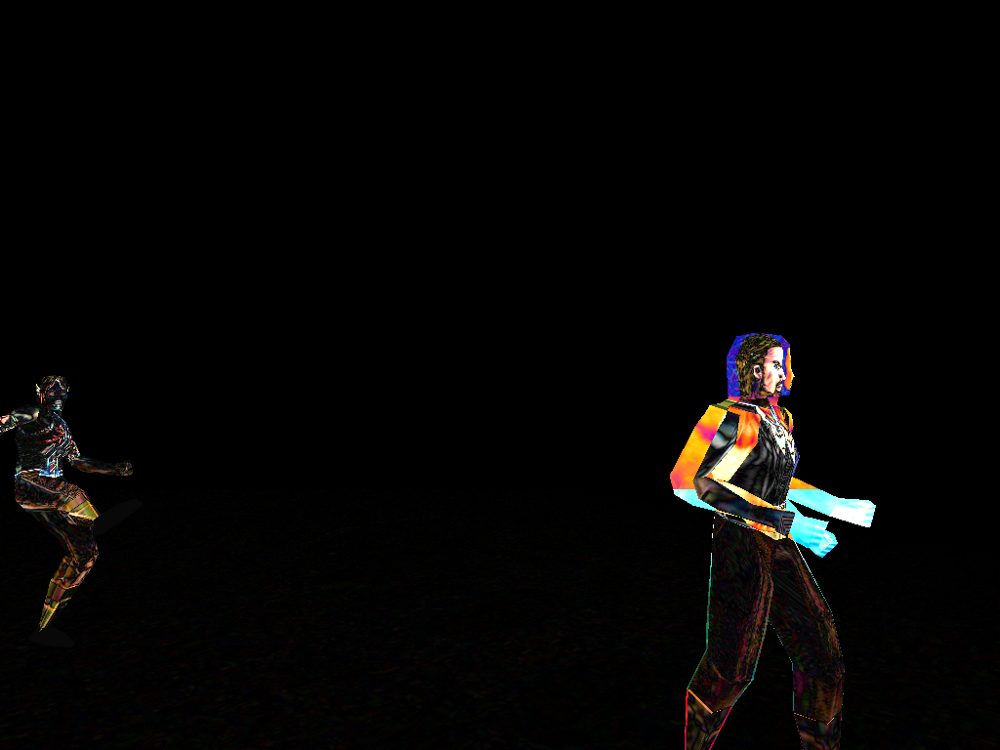
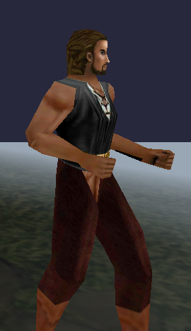
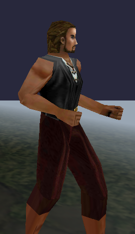
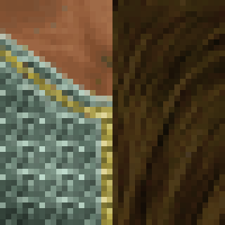
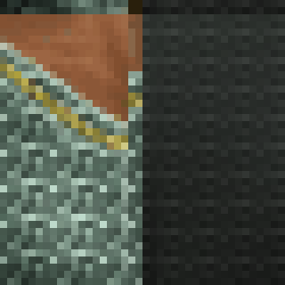

Pre-P16

Post-P16 — pixel-identical (0 differing px)
| Metric | Old (live) | New (staged) | Reduction |
|---|---|---|---|
| BMP total | 813,466,782 B | 261,010,590 B | 67.9% |
| EQE1 total | 180,812,344 B | 58,046,648 B | 67.9% |
No sheet is larger after the fix (max new/old ratio = 1.00, min = 0.0625 — a 16x reduction on the most extreme prior outlier). 21 additional sheets built that previously failed to fit a 1024 sheet cap or were otherwise not present live.
| frame | P12b baseline (pre-P16) | P16 (post-fix) |
|---|---|---|
| f15 | 17.206% / mean 0.108 / max 128 | 17.223% / mean 0.218 / max 182 |
| f25 | 29.305% / mean 1.463 / max 215 | 29.312% / mean 1.545 / max 224 |
| f35 | 25.973% / mean 2.151 / max 227 | 25.972% / mean 2.102 / max 220 |
The whole-frame composite-vs-multibuffer diff is essentially UNCHANGED in aggregate. Direct pixel inspection of the diff image (below) shows the difference is spread across almost the entire model silhouette, not concentrated at a thin tile-boundary line — i.e. this metric is dominated by a broader composite-vs-multibuffer rendering discrepancy (material/lighting recalculation differences under animation) that P12b itself could not root-cause and flagged for a follow-up unit; it is not primarily the atlas seam. A direct old-vs-new composite (same camera/entities, sheets swapped) comparison confirms P16's fix DID change composite rendering — 0.96–6.66% of pixels differ frame-to-frame, consistent with the seam-inset + tile-cap change taking effect — while the baseline (unaffected by this unit) renders byte-identical old vs new, confirming harness reproducibility.

f25 diff (composite vs baseline), post-P16 — visibly a whole-model discrepancy, not a thin seam line

Pre-P16 sheets

Post-P16 sheets — no visible new artifacts

Pre-P16
Post-P16 — pixel-identical (0 differing px)

Pre-P16 — hard placement boundary, no gutter

Post-P16 — same boundary (raw sheet pixels don't show bilinear bleed since that only occurs at GPU sample time; the seam-inset gutter lives just outside the sampled UV range and is not visible here by design)
498/498 staged sheets pass P08f's structural audit (bmp/json/eqe1 present, JSON parses,
sheet dims match BMP header, EQE1 magic valid) — see ../../audits/p16_sheet_quality/p16_structural_audit.json.